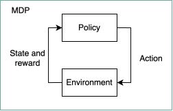
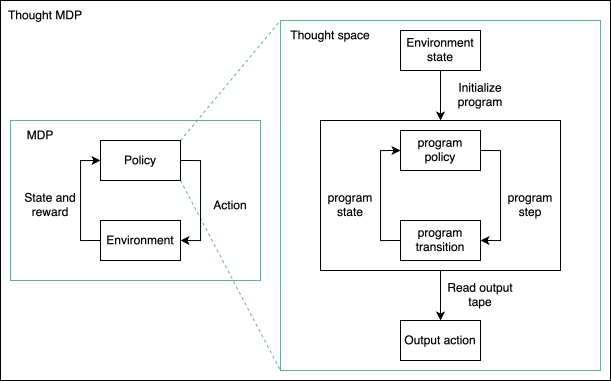
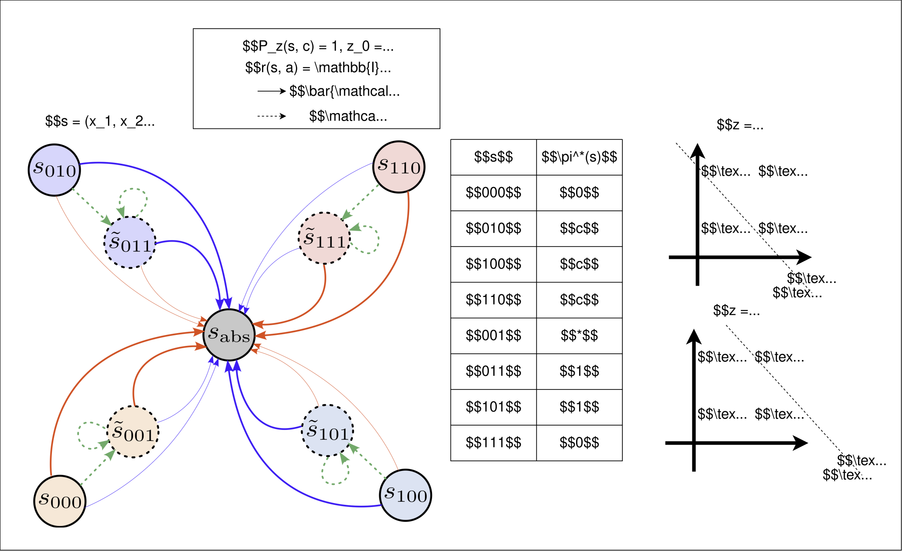
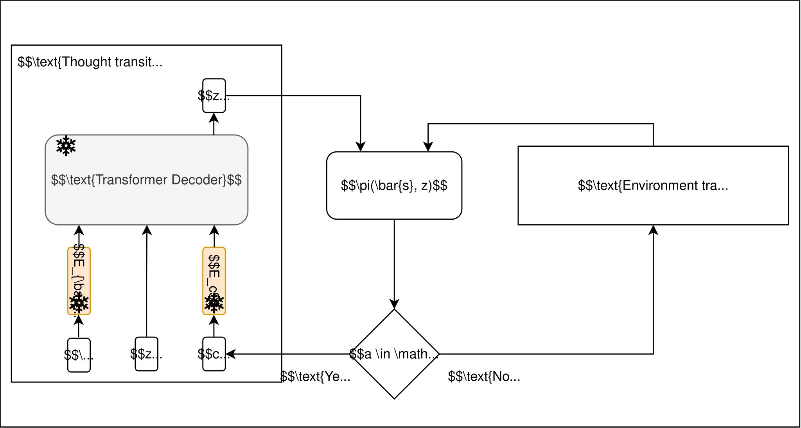
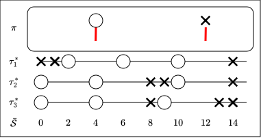
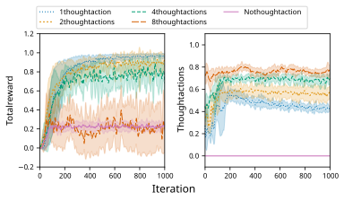

When we talk about a sequential decision making problem, we usually formulate the problem as a reinforcement learning (RL) problem where a policy (or an agent) interacts with an environment. The environment is modeled as a Markov decision process (MDP)---the policy repeatedly observes a state, chooses an action, and receives a reward and a next state from the environment. The goal here is to find a policy that maximizes the cumulative sum of rewards.

But there is an assumption hiding in this picture---we often surmise that the policy can instantly produce the correct action. In reality, every policy is implemented as a program running on a computer. Programs require computation and computation is a limited resource.
Policies are programs
A policy is simply a function mapping states to actions, but in order for them to be representable by some computers, this function has to be computable. You can consider computable functions as functions that can be represented by a Turing machine. A Turing machine (TM) can be described by a finite set of symbols, a finite set of possible states, and a transition function. Equipped with an unbounded tape with some input string written on it, a TM can perform computation by reading the symbols on the tape one at a time, potentially overwriting them with another symbol. This TM also changes its state upon reading one symbol based on its transition function. The computation halts once this TM transitions into a halting state.
One fundamental question in computability theory is to ask whether we can have a TM that determines whether a given TM halts on a given input. It turns out this is undecidable, meaning that there is no such TM that can determine the answer to this question in general. That means generally there are questions for which we cannot find a computable function to solve it. Consequently even if we scale indefinitely (like we currently do with LLMs), we will never be able to answer undecidable problems. In fact, one can view "scaling indefinitely" as a way to create larger and larger tables that "memorizes" the input/output pairs.
Undecidable problems are an extreme case. Let's restrict ourselves to decidable problems. Even in this case, in practice we see that LLMs are equipped with some adaptive computation mechanisms such as chain-of-thought reasoning [2] and recursive models [3]. A recent work indicates that these adaptive computation methods help even for factual recalls [4]! All of these works suggest adaptive computation helps, but how does it help in RL (and LLM)?
Thought MDPs to the rescue?
[5] proposes thought MDP that aims to model "thinking" as part of the decision process. A thought MDP is just an MDP equipped with an additional thought space, where the policy now has the option to take thought actions instead of environment actions---while the policy is "thinking" by taking thought actions, the environment waits for the policy. Intuitively, you can think of doing an exam where no one will suddenly change the question you're currently working on (of course when the time is up you can no longer think nor act).

Formally, we augment an MDP with thought states, thought actions, and a thought transition. This gives a tuple \( \langle \mathcal{\bar{S}}, \mathcal{\bar{A}}, \bar{P}, \bar{r}, \mathcal{Z}, \mathcal{C}, P_z \rangle \) where \( \mathcal{\bar{S}} \) is the environment state space, \( \mathcal{\bar{A}} \) is the environment action space, \( \bar{P} \) is the environment transition function, \( \bar{r} \) is the environment reward function, \( \mathcal{Z} \) is the thought state space, \( \mathcal{C} \) is the thought action space, and \( P_z \) is the thought transition function. Notably, we assume that a policy can only take either one environment action or one thought action at a time, i.e., \( \mathcal{\bar{A}} \cap \mathcal{C} = \emptyset \). We define \( \mathcal{S} = \mathcal{\bar{S}} \times \mathcal{Z} \) and \( \mathcal{A} = \mathcal{\bar{A}} \cup \mathcal{C} \) to be the (complete) state and action spaces. The transition and the reward are respectively defined to be \[ \begin{align*} s' | s, a = \begin{cases} s' \sim \bar{P}(\bar{s}' | \bar{s}, a) P_z (z' | \bar{s}, z, a) & \text{if } a \in \mathcal{\bar{A}} \\ s' \sim \delta(\bar{s}' = \bar{s}) P_z (z' | \bar{s}, z, a) & \text{if } a \in \mathcal{C} \end{cases}, && r(s, a) = \begin{cases} \bar{r}(\bar{s}, a) & \text{if } a \in \mathcal{\bar{A}} \\ 0 & \text{if } a \in \mathcal{C} \end{cases}. \end{align*} \]
[5] assumes that \( P_z \) is a deterministic transition function, the action is either an environment action or a thought action, and thought action yields a \( +0 \) reward and has no influence on the environment state. In our case, for simplicity we set \( P_z(z' | \bar{s}, z, a) = \delta (z' = z_0) \) for \( a \in \mathcal{\bar{A}} \), meaning that whenever the policy takes an environment action the thought state resets. This prevents, for example, spending all computation to plan out all possible futures in advance, which is interesting but is not the focus of this work.
One of the anticlimactic consequences of [5] is the following proposition: \[ \text{Any optimal policy } \pi^* \text{ for a thought MDP does not take thought actions: } \pi^*(s) \in \mathcal{\bar{A}}, \forall s \in \mathcal{S}. \] That means, the optimal policy always outputs the optimal environment action without any extra computation---this diverges from what people observe in practice, and also diverges from what computability and complexity theory indicate! What is going on?
Resource boundedness necessitates thought space
A classic result in computability theory shows us that the set of computable functions are strictly smaller than the set of all functions, this is analogous to comparing the sizes of natural numbers to real numbers. In complexity theory, the time-hierarchy theorem indicates that there are problems that necessarily require more compute than some other problems. Likewise, in machine learning, if the model class is the set of linear functions and the classification problem is non-linearly separable, we cannot hope to find an optimal predictor. In all cases, we can view the computable functions and the linear model class to be "resource bounded"---we cannot hope for these functions to return the desired output immediately (if ever). We claim that this is what [5] misses when discussing "thinking" as part of the decision process.
Consider a MDP formulation of the XOR problem. Here, the environment state space is \( \mathcal{\bar{S}} = \{0, 1\}^2 \cup \{ \bar{s}_\text{abs} \} \) and the environment action space is \( \mathcal{\bar{A}} \). The environment transition function is defined as \( \bar{P}(\bar{s}_\text{abs} | \bar{s}, \bar{a}) = 1 \) and the reward is defined as \[ \bar{r}(\bar{s}, \bar{a}) = \begin{cases} 0 & \bar{s} = \bar{s}_\text{abs},\\ \mathbb{I}(\textsf{XOR}(x_1, x_2) = a) & \text{otherwise}, \end{cases} \] where we represent \( \bar{s} = (x_1, x_2) \). Clearly, if we consider a linear policy class \( \Pi = \{ \theta \in \mathbb{R}^{2 \times 2} | \arg\max_{\bar{a} \in \mathcal{\bar{A}}} \theta(\bar{a}) \bar{s} \} \), then no policy \( \pi \in \Pi \) can obtain a \( +1 \) reward for all states \( \bar{s} \in \{0, 1\}^2 \) as the XOR problem is non-linearly separable.
One traditional approach is to add a feature that captures \( x_1 x_2 \) which makes the problem linearly separable in this feature space. Our idea is similar in that we will use the thought space to add extra dimensionality, but the core difference is that the agent has to identify and reach to an appropriate feature itself.
Formally, let's consider a thought space where the thought state space is \( \mathcal{Z} = \{ 0, 1 \}\), the thought action space is \( \mathcal{C} = \{ c \} \), and the thought transition is \( P_z( x_1, x_2, 1 | x_1, x_2, z , c) = 1 \). Notably, the thought transition sets the last bit to be \( 1 \) whenever a thought action is taken. We set the initial thought state to always be \( z_0 = 0 \) so that it carries no environment-state-dependent information initially. Figure 3 shows the thought MDP induced by this thought space.

The table in the middle of Figure 3 shows a possible optimal policy mapping \( \pi^* \)---it remains to find a linear policy in the thought MDP that realizes \( \pi^* \). Here is one possible parameter construction: \[ \theta^* = \begin{bmatrix} -10 & -10 & 30\\ -13.5 & -13.5 & 35\\ 1 & 1 & 0 \end{bmatrix} \] When \( z = 0 \), this policy singles out the \( {00} \) string by outputting \( a = 0\), and outputting \( a = c \) for other states. Upon taking the thought action \( c \), the thought state becomes \( z = 1\). This policy then singles out the \( {11} \) string by outputting \( a = 0\), and outputting \( a = 1 \) for other states. Note that since the policy outputs the correct parity for \( s = [0, 0, 0] \), we can ignore the policy output for \( s = [0, 0, 1] \) as this state is never visited. Put simply, the policy correctly predicts the parity of \( {00} \) immediately, and takes one thought step before correctly predicting the parity of \( {01} \), \( {10} \), and \( {11} \).
By imposing a "suitable" thought space, we can expand the policy expressiveness---creating new policies that can represent a state-to-action mapping that was not originally available in the standard MDP. Generally, once you find a suitable thought space, you can generate infinitely many more thought spaces that would work---in the XOR example I constructed at least three other thought spaces with different interpretations. The important point is that the thought space increases policy expressiveness without increasing the capacity of the policy class itself, e.g., linear policy stays linear. Consequently, there are many new questions that we can be asking: (1) How one can ensure a thought space actually expands policy expressiveness? (2) What is the minimal construction of a thought space that uses the least number of thought states and thought actions? (3) What is the best construction of a thought space so that the optimal policy takes the least number of thought actions before taking the optimal environment action?
A general thought space
We will now focus on (1): How one can ensure a thought space actually expands policy expressiveness? Our intuition is that if the thought space can be as "general" as possible, then a policy has more chances to be more expressive. The term "general" is fairly vague---here we use "universal computation" in computability theory to mean "general" as a universal computer can simulate any computable function. [6] shows that (extended) autoregressive decoding with transformers (or RNNs) can simulate universal TMs, meaning that these models are effective universal computers! Thus, our way to construct a thought space is to use a causal transformer with (extended) autoregressive decoding---with finite state space we can remove the autoregressive decoding requirement and replace it with recursive modelling, e.g. TRM [3] or looped transformers [7].

Figure 4 shows an instantiation of thought MDPs that use a transformer-induced thought space. We construct the thought space as follows: The thought transition is defined by a two-layered causal transformer \( \mathtt{TF} \), an environment state embedder \( E_\bar{s} \), and an action embedder \( E_c \). All of \( \mathtt{TF} \), \( E_\bar{s} \), and \( E_c \) are randomly initialized and have the parameters fixed, i.e., no learning. The initial thought state \( z_0 \) is a frozen vector that is randomly initialized. Upon taking a thought action \( a \in \mathcal{C} \), the thought transitions by performing \( z' = \mathtt{TF}(E_\bar{s}(\bar{s}), z, E_c(a)) \) while keeping the environment state fixed. Upon taking an environment action \( a \in \mathcal{\bar{A}} \), the environment transitions following \( \bar{P}(\bar{s}' | \bar{s}, a) \) and resets the thought state \( z' = z_0 \).
Toy experiment on FrozenLake
We now illustrate that this thought MDP is sufficiently general in the FrozenLake environment [8]. This environment requires moving the character from the top-left cell to the bottom-right cell. Here, the environment state is a scalar \( \bar{s} \in \{0, \dots, 15 \} \) corresponding to the \(\bar{s}\)'th cell of the grid, counting from left to right then from top to bottom; and the environment action is \( \bar{a} \in \{ \mathsf{LEFT} (L), \mathsf{DOWN} (D), \mathsf{RIGHT} (R), \mathsf{UP} (U) \} \). Upon reaching the bottom-right cell, the agent obtains a \( +1 \) reward and the episode terminates. Upon reaching the puddle cells, the episode also terminates but without any penalty. Otherwise, an episode is truncated after 30 steps---a thought action corresponds to one step in the environment, and we do not set any limit on how many thought actions the agent can take.


We first show that the optimal policy in this environment is not realizable by a linear policy. There are three possible optimal paths as illustrated in Figure 5, right:
- \( \tau_1^* = \{ 0: R, 1: R, 2: D, 6: D, 10: D, 14: R \} \),
- \( \tau_2^* = \{ 0: D, 4: D, 8: R, 9: R, 10: D, 14: R \} \), and
- \( \tau_3^* = \{ 0: D, 4: D, 8: R, 9: D, 13: R, 14: R \} \).

We now experimentally show that linear policies can be optimal in our transformer-induced thought MDP. We vary each agent by providing a varying number of thought actions \( \lvert \mathcal{\bar{A}} \rvert = \{0, 1, 2, 4, 8 \} \). The thought state space is \( \mathcal{Z} = \mathbb{R}^{8} \) and the thought transition is governed by a two-layered causal transformer with two attention heads. Each policy is represented as a linear function followed by a softmax function and we train each agent using proximal policy optimization (PPO). Each PPO iteration collects 50 trajectories and perform three full-batch updates. In total we train the agent for 1,000 iterations. We also train a linear value function using Monte-Carlo rollouts and compute the generalized advantage estimation (GAE). We use the Adam optimizer with learning rate \( \alpha = 0.01 \) to update the policy and value-function parameters. For this experiment we are interested in evaluating the total reward and the proportion of thought actions in an episode. For each agent we run five random seeds and report the mean and \( 95\% \) confidence interval in Figure 6.
As expected we can see that without any thought actions, the agent is unable to obtain near-optimal performance, whereas the agents with thought actions, except for when \( \lvert \mathcal{\bar{A}} \rvert = 8 \), can obtain significantly better performance. However, we can see that as we increase \( \lvert \mathcal{\bar{A}} \rvert \) the proportion of thought action increases---when \( \lvert \mathcal{\bar{A}} \rvert = 8 \) the agent just spends almost \( 80\% \) of the steps for thinking. This is likely due to the increased difficulty of exploration---including more thought actions means there could be exponentially many thought paths that may or may not lead to the optimal actions, in the worst case this becomes finding the needle in the haystack. To draw an anthropomorphic analogy, this is similar to giving someone a pen and a piece of paper---a scholar might be able to derive useful results while a toddler might not be able to even write with a pen.
Conclusion
Process vs architecture scaling
An interpretation of this work is that rather than spending resources on scaling the size of a model that is commonly fixed during inference, we can instead spend resources on computational steps. One of the benefits here is that the thought space can be a completely different computational model, or even a (possibly uncomputable) oracle. For instance, one can formulate the thought space to be API calls in which the API can provide useful information for decision making [9]. Likewise, one can formulate chain-of-thought reasoning [2] as a way to increase computation. This flexibility decouples between architectural design (the model) and process design (the "thought" space).
In terms of the pragmatic benefits, one can consider that scaling the depth and width of a model positively correlates with the training cost---of course, techniques such as mixed precision and gradient accumulation/checkpointing help but at some point we will require new training methodologies for continued scaling. The counterargument here is that the (potential) increased inference cost can be equally expensive, if not more expensive. Nevertheless, this is not to say that we should not scale the architecture---instead I am saying that it is important to think about how, what, and where are we scaling.
Another point that we must accept is the fact that a fixed-size, finite-precision architecture without external memory is only a linearly-bounded TM, which is a more restricted computational model than a standard TM. One argument here is that we do not realistically have unbounded memory. With the recent breakthrough by [10] we can use substantially less memory to find the correct solution (at the cost of increased runtime).
Where does learning fit into this framework?
In this work, we mostly motivated whether there is a fixed policy that can perform optimally with a thought space. The learning aspect is somewhat an afterthought when I gave the experimental result (note that in the MDP formulation we never talk about learning explicitly). One way to study the learning aspect is to treat the state provided to the policy here to be an "agent state" and model the learning process through the history of observations and actions [11], [12]. In this case we would have to talk about the computability and complexity of the learning process. Nevertheless, even if we have an "agent state", it does not take away the fact that we have to spend computation to map the "agent state" to an environment action.
A small rant on anthropomorphic analogies
In the previous section I used the pen-and-paper analogy to describe some intuitions about how thought space might help. I personally find this anthropomorphism to be potentially misleading for research. On the one hand, these analogies can be inspiring. For example, the formulation of RL is inspired by how animals learn [13] and one of the first neural networks was inspired by the brain [14]. On the other hand, these analogies might mislead how these models truly operate. For example, [5] describes this additional process as a "thought process" and [2] calls autoregressively generated tokens as "chain-of-thought reasoning". We can instead call "thought process" as an "intermediate computation process" or an "internal process", and nothing would have changed. Indeed, once we use a TM to construct the "thought" space, do we say the TM is "thinking" when it is computing? Is a chain of computation equivalent to reasoning? If I must use anthropomorphic analogies, the work that illustrates "reasoning" helps with factual recall [4] is closer to "memory anchoring" than "reasoning" (assuming that reasoning is about using a sequence of logical deductions to draw a conclusion). My point is that we should be clear about where the analogy works and when it does not.
BibTeX
@misc{chan2026necessity,
title={Necessity of computation in decision making},
author={Chan, Bryan and Garg, Shivam and Schuurmans, Dale},
url={https://chanb.github.io/blogs/necessity\_of\_computation},
year={2026}
}
Acknowledgement
Bryan would like to thank Jiamin He and Rupam Mahmood for the discussions about possible interpretations of thought MDPs.
References
[1] Nynexman4464. "Turing machine 2b.svg." Wikimedia Commons, Wikimedia Foundation (2008): https://commons.wikimedia.org/wiki/File:Turing_machine_2b.svg.
[2] Wei, Jason, et al. "Chain-of-thought prompting elicits reasoning in large language models." Advances in neural information processing systems 35 (2022).
[3] Jolicoeur-Martineau, Alexia. "Less is more: Recursive reasoning with tiny networks." arXiv preprint arXiv:2510.04871 (2025).
[4] Gekhman, Zorik, et al. "Thinking to recall: How reasoning unlocks parametric knowledge in LLMs." arXiv preprint arXiv:2603.09906 (2026).
[5] Hanna, Josiah, and Nicholas Corrado. "When Can Model-Free Reinforcement Learning be Enough for Thinking?." Advances in Neural Information Processing Systems 38 (2026).
[6] Lewandowski, Alex, Marlos C. Machado, and Dale Schuurmans. "Universal computation is intrinsic to language model decoding." arXiv preprint arXiv:2601.08061 (2026).
[7] Giannou, Angeliki, et al. "Looped transformers as programmable computers." International Conference on Machine Learning. PMLR, 2023.
[8] Towers, Mark, et al. "Gymnasium: A standard interface for reinforcement learning environments." Advances in Neural Information Processing Systems 38 (2026).
[9] Qin, Yujia, et al. "Toolllm: Facilitating large language models to master 16000+ real-world apis." International Conference on Learning Representations. Vol. 2024. 2024.
[10] Williams, R. Ryan. "Simulating time with square-root space." Proceedings of the 57th annual ACM symposium on Theory of computing. 2025.
[11] Abel, David, et al. "On the convergence of bounded agents." arXiv preprint arXiv:2307.11044 (2023).
[12] Dong, Shi, Benjamin Van Roy, and Zhengyuan Zhou. "Simple agent, complex environment: Efficient reinforcement learning with agent states." Journal of Machine Learning Research 23.255 (2022): 1-54.
[13] Sutton, Richard S., and Andrew G. Barto. Reinforcement learning: An introduction. Vol. 1. No. 1. Cambridge: MIT press, 1998.
[14] Rosenblatt, Frank. "The perceptron: a probabilistic model for information storage and organization in the brain." Psychological review 65.6 (1958): 386.